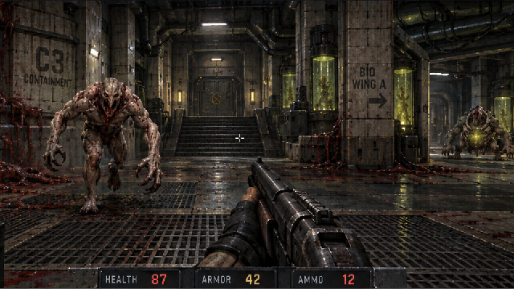
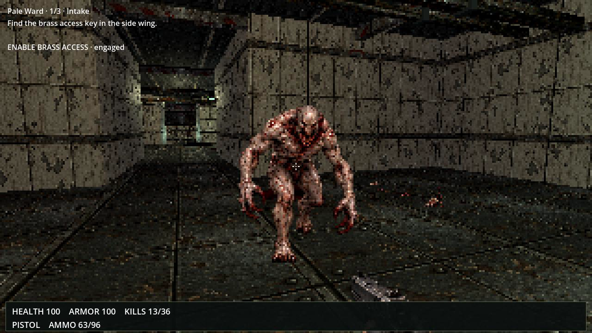

EYESORE · THE PALE WARD · INTAKE
A clinical route with a surgical return loop
The first section has new room proportions and connections, a theatre-to-supply return, deliberate medical work cells, layered ceiling services and local practical lighting. Existing weapons, music and campaign supply totals are retained.
Patient intake → Decontamination → Sunken triage → Power control → Raised diagnostics → Operating theatre / brass key → Sterile supplies → Supply-side shortcut → Decontamination → Triage / brass gate
Room objects and progression inventory · Previous v6 room/pickup review
Original visual reference

Original Pale Ward concept. Reference artwork, separate from the native game captures below.Actual exported gameplay

55 seconds into the shipped Linux executable recording: actual live AI, ordinary combat and HUD with automated input. Original movie frame decoded to PNG without image filters. Separate from the frozen room views below.Current native room views
Actual Main and Compatibility renderer. Controlled doorway/detail cameras; actor physics and AI frozen, enemy visuals hidden to inspect rooms. These are original screenshot bytes, with no image edits. They are not live combat or proof of matching the complete original concept.
What is verified separately
Key/power/shortcut rules, reset ownership, physical stairs and room passages, live Ward enemy pursuit and attacks, weapon alignment and timing. Continuous campaign routes and the exported Linux build receive separate release checks. Human art, mouse feel, pacing and listening acceptance remain open.